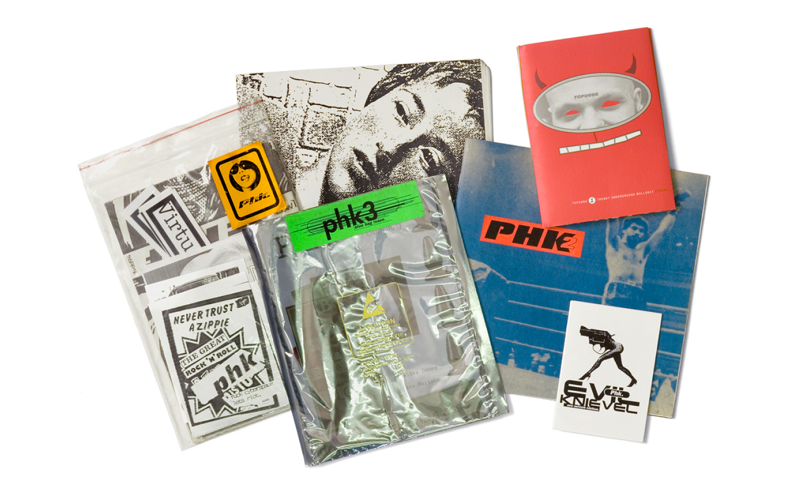

This interview is fresh from my new book All Possible Futures, published by Bedford Press.
All Possible Futures: Experimental Jetset on Speculative Graphic Design
Text by Jon Sueda

The book accompanies the exhibition of the same name, which was on view at SOMArts Cultural Center from January 14 through Feb 13, 2014, and features texts by Rachel Berger, Max Bruinsma, Emmet Byrne and Metahaven, Catherine de Smet, and Emily McVarish. In addition to these texts, I conducted interviews with a variety of practicing designers in an attempt to get a deeper understanding of “speculative” graphic design practices and the various positions and orientations designers are taking today. Below is my interview with Experimental Jetset.
Jon Sueda:
What does the term “speculative” mean to you and your practice?
Experimental Jetset:
We realize that some designers and artists are doing really interesting (and brilliant) stuff under the umbrella of “speculative design” (Metahaven comes to mind, obviously), and we do confess we always feel a slight tingle of excitement when concepts such as “design fiction” and “speculative realism” are brought up. But, other than that, we have to admit we’ve always very much disliked that word, “speculative.” It just has too many negative connotations to us: spec work, financial speculation, et cetera.
Jon Sueda:
One could say that the work in this exhibition represents a parallel universe, designers who practice on the margins of the profession, making work which might only exist because they were proactive about initiating it. Does this parallel universe exist?
Experimental Jetset:
It’s interesting. Reading your question, we suddenly remembered our own situation after graduation. We actually come from a zine background. When we were studying at the Rietveld Academy, we were publishing our own fanzines, posters, T-shirts, et cetera. And even before we went to art school, we were involved in creating mini-comics, mix tapes, and mail art. So you could say that we are products of exactly the sort of parallel universe you talk about.
Read the full story
at Walker magazine
About the author:
Originally from Hawaii, Jon Sueda has practiced design everywhere from Honolulu to Holland. After earning his MFA in Graphic Design from CalArts in 2002, he was invited to North Carolina State University to serve as a designer in residence, followed by an internship in the Netherlands with Studio Dumbar. In 2004, Sueda co-founded the design studio Stripe, which specializes in printed material for art and culture. He is also the co-editor of Task Newsletter, and the co-organizer of AtRandom events. Sueda has lectured, taught workshops and has been visiting critic many universities. In 2007, Sueda relocated to the San Francisco area, where he is an Assistant Professor in the Graphic Design Program at California College of the Arts (CCA).